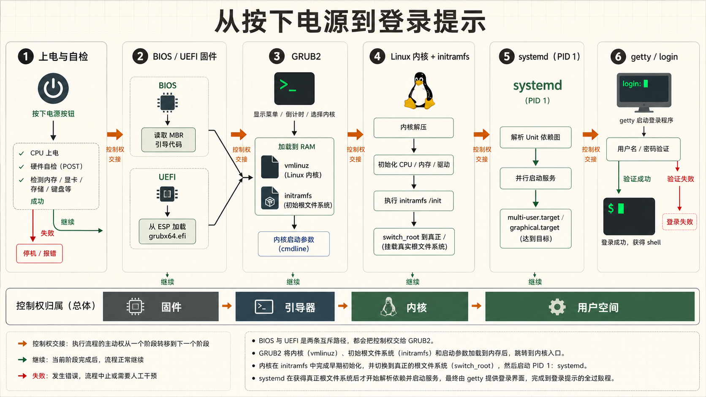
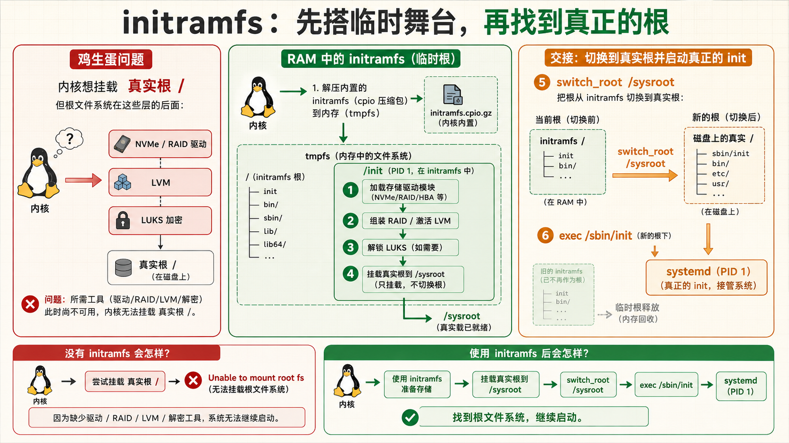
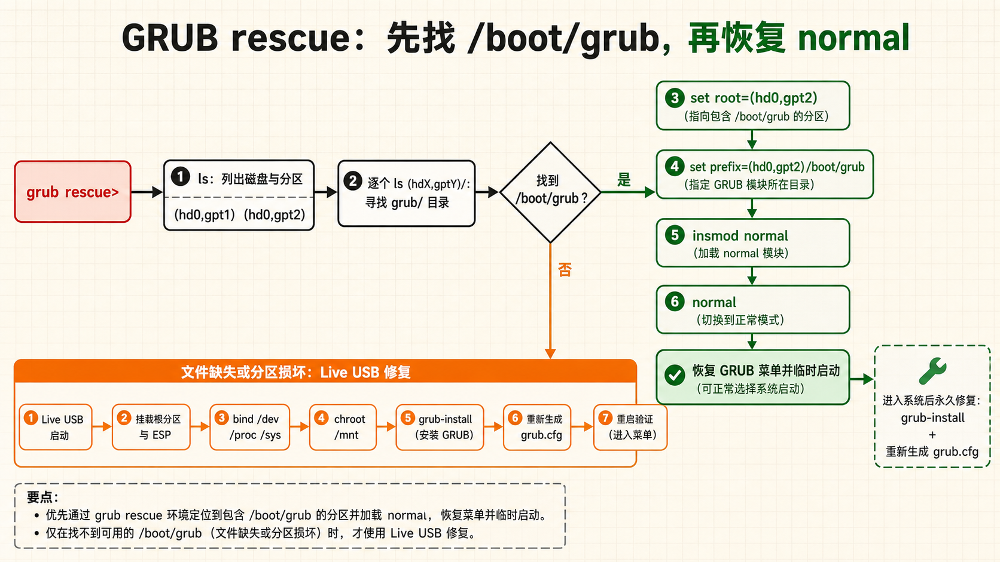
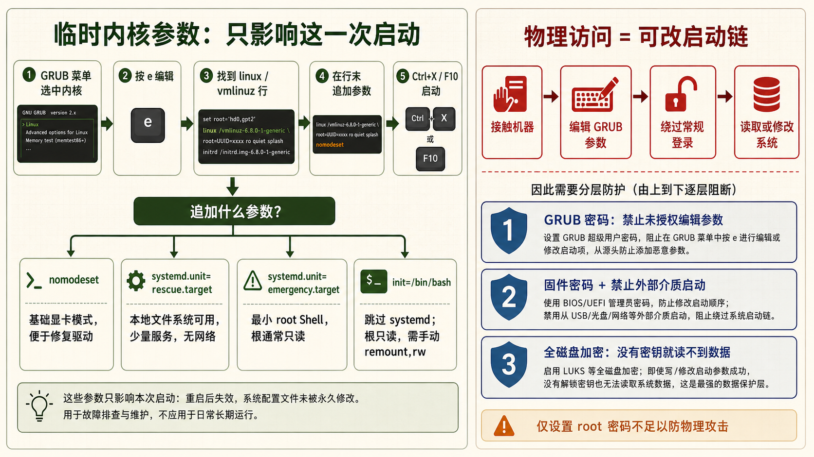
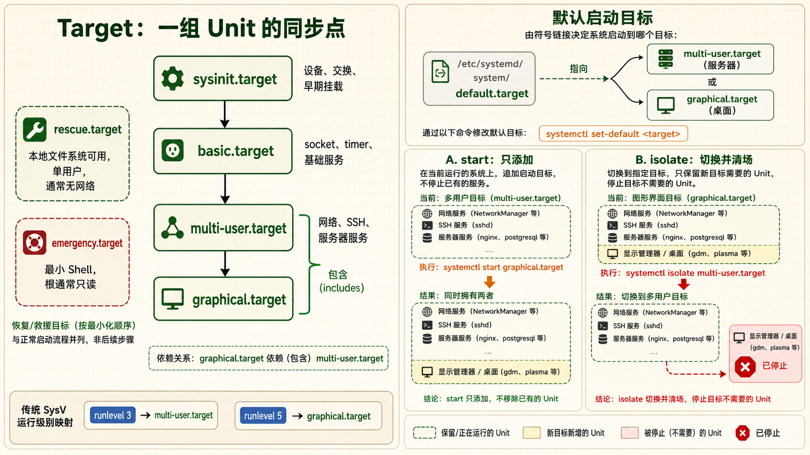

1启动流程6步走 — 从按下电源到登录提示
一次完整的 Linux 启动涉及固件→引导器→内核→init进程四个阶段的精密协作
必知问题驱动：按下电源按钮之后，到底发生了什么？
很多运维工程师在系统能正常启动的时候从不过问启动流程，直到某天服务器卡在"GRUB rescue>"或黑屏光标闪烁时才发现自己对启动流程一无所知。理解整个启动链条，不仅是为了排错——更是为了掌握系统安全（单用户绕过密码）、定制内核参数（调优启动行为）、修复损坏的引导记录。
第1步：BIOS / UEFI — 固件自检与设备初始化
BIOS（Basic Input/Output System） 是主板上的固件芯片，系统上电后 CPU 从固定地址（0xFFFFFFF0，BIOS 重置向量）开始执行 BIOS 代码：
- POST（Power-On Self-Test，上电自检）：检测 CPU、内存、键盘、显示器等基础硬件是否正常。如果检测到 RAM 故障或显卡未连接，通过蜂鸣声（beep code）报警
- 枚举 PCI/PCIe 总线：扫描所有插槽上的设备，分配 IO 端口和内存映射地址
- 确定启动设备：按 BIOS 设置的启动顺序（Boot Order），找到第一块可启动的磁盘——一般是硬盘、USB 或网络 PXE
- 加载引导扇区：从启动设备的前 512 字节（MBR）中读取引导加载程序的第一阶段代码，将其加载到内存地址 0x7C00 并跳转执行。BIOS 的使命到这里就结束了
UEFI（Unified Extensible Firmware Interface） 是现代替代 BIOS 的固件标准：
- 不再有 16 位实模式和 1MB 地址空间的限制，直接在 32 位或 64 位保护模式下运行
- 从 EFI 系统分区（ESP，通常是 FAT32 格式）中查找
.efi可执行文件作为引导加载程序 - 支持安全启动（Secure Boot）——只加载经过数字签名的引导程序，防止 rootkit 在系统启动前注入恶意代码
- 支持 GPT 分区表（MBR 时期 2TB 的限制不再存在）
| 对比 | BIOS (Legacy) | UEFI |
|---|---|---|
| 运行模式 | 16 位实模式 | 32/64 位保护模式 |
| 分区表 | MBR（最大 2TB） | GPT（无 2TB 限制） |
| 启动文件位置 | 磁盘第一个扇区（512 字节） | EFI 系统分区中的 .efi 文件 |
| 安全启动 | 不支持 | Secure Boot 可启用 |
| 启动速度 | 较慢（串行初始化） | 快（并行初始化） |
| GUI 支持 | 文本界面 | 可显示图形 |
第2步：GRUB — 引导管理器接管
GRUB（GRand Unified Bootloader）是目前 Linux 世界事实标准的引导加载器。它分为多个阶段：
- BIOS 路径的第一阶段
boot.img：驻留在 MBR 引导代码区域，定位并加载core.img core.img：包含访问后续 GRUB 模块和文件系统所需的最小功能；菜单解析与内核加载由后续模块完成，不应把它和完整的“Stage 2”混为一体- UEFI 中的 GRUB：固件直接加载
grubx64.efi文件——不需要 Stage 1 和 Stage 2 的分段策略，因为 ESP 分区的 FAT 文件系统对 UEFI 固件天然可读
GRUB 做了什么：
- 读取发行版生成的 GRUB 配置；常见路径为
/boot/grub/grub.cfg或/boot/grub2/grub.cfg，UEFI 的 ESP 中也可能只有一个跳转用的小配置，不能单凭固件类型推断路径 - 显示内核选择菜单——如果有多个内核版本或操作系统
- 用户选择后（或超时后使用默认），加载内核镜像（
vmlinuz-*）和 initramfs（initrd.img-*）到内存 - 设置内核命令行参数（从 GRUB_CMDLINE_LINUX 等变量获取）
- 将控制权交给内核——GRUB 的使命结束
第3步：内核初始化
内核被加载到内存后开始执行。它的核心任务：
- 解压自身：内核镜像（vmlinuz）是一个被 gzip/bzip2/lz4/zstd 压缩的 ELF 二进制文件，首先解压到内存
- 初始化 CPU 和内存管理：设置页表、启用分页、初始化内核内存分配器（slab/slub）
- 初始化硬件子系统：中断控制器（APIC）、定时器（HPET/TSC）、SMP（多核调度）
- 加载 initramfs：initramfs 是一个压缩的 cpio 归档，包含内核需要的早期用户空间程序——特别是设备驱动模块（如 RAID/SATA/NVMe 驱动）和挂载根文件系统所需的工具（LVM、加密等）。内核将其解压到
tmpfs并挂载为初始根文件系统 - 运行 initramfs 中的
/init脚本：这个脚本在临时根文件系统中执行——加载必要的内核模块、激活 LVM 卷、输入加密磁盘密码——最终挂载真正的根文件系统 - 切换根文件系统（pivot_root / switch_root）：将根文件系统从 initramfs 的 tmpfs 切换到硬盘上的真正根分区，执行真正的
/sbin/init
第4步：systemd — 用户空间的第一个进程
systemd 是 PID 1——用户空间所有进程的最终祖先。它是现代 Linux 发行版的默认 init 系统（取代了传统的 SysVinit）。systemd 的启动过程：
- 并行启动服务：解析所有 unit 文件的依赖关系，按照依赖图并行启动——不再像 SysVinit 那样串行执行
/etc/rc.d/rc?.d/中的脚本，启动速度大幅提升 - 激活必要的 target：target 是服务分组的抽象——
basic.target（基础系统：挂载点、套接字、定时器、交换空间）→multi-user.target（多用户文本模式）→graphical.target（图形界面） - 套接字激活（Socket Activation）：systemd 可以提前监听服务所需的端口，在有连接进入时才真正启动服务——加速启动，节省内存
- 激活终端（getty）：在 TTY1-6 上运行
agetty进程，显示登录提示
第5步：登录终端出现
当 getty@tty1.service 启动后，屏幕显示熟悉的登录提示：
Ubuntu 22.04 LTS hostname tty1
hostname login: _输入用户名后，login 程序验证密码（通过 /etc/passwd、/etc/shadow、PAM 模块），验证通过后启动用户的默认 shell（一般为 /bin/bash）。至此，从按下电源到登录提示的完整启动流程结束。

可视化：启动时间轴
# 分析启动时间——找到哪个环节最慢
systemd-analyze
# 输出示例：
# Startup finished in 2.345s (kernel) + 8.912s (userspace) = 11.257s
# 按服务排序——找出耗时最长的服务
systemd-analyze blame | head -20
# 输出示例：
# 3.245s NetworkManager-wait-online.service
# 2.112s docker.service
# 1.523s mysql.service
# 345ms systemd-journal-flush.service
# 绘制启动流程的 SVG 时间线图
systemd-analyze plot > boot-timeline.svg
# 查看关键链——哪些服务形成了最长的依赖链
systemd-analyze critical-chain一个经典的"鸡生蛋"问题：根文件系统可能在 RAID 阵列上、在加密的 LUKS 分区上、在网络的 NFS 上——内核刚启动时没有这些功能的驱动，如何挂载根文件系统？initramfs 就是解药——它是一个微小但完整的临时根文件系统，包含所有需要的驱动和工具，先加载它来"搭建舞台"，然后才能切换到真正的根文件系统。

2GRUB 配置与救援模式 — 系统启动的最后一道防线
GRUB 不仅选择启动哪个内核——它是你救援"启动不起来"系统的救命入口
实操/etc/default/grub — 主配置文件
/etc/default/grub 是 GRUB 界面和默认行为的设置文件。修改这个文件后，需要重新生成 grub.cfg 才能生效。
# 查看 GRUB 主配置文件
cat /etc/default/grub▶ 典型 /etc/default/grub 内容
# 如果注释掉此行或设为 false，GRUB 菜单将隐藏。true 则强制显示菜单
GRUB_TIMEOUT_STYLE=menu
# 菜单显示 5 秒后自动选择默认选项。0 表示不等待
GRUB_TIMEOUT=5
# 默认启动的内核。0 是第一个菜单项，1 是第二个，saved 表示使用上次选择的
GRUB_DEFAULT=0
# 正常启动时传递给内核的参数
GRUB_CMDLINE_LINUX_DEFAULT="quiet splash"
# 传递给所有启动项的内核参数（包括恢复模式）
GRUB_CMDLINE_LINUX=""
# 如果设置为 true，为每个内核生成一个恢复模式菜单项
GRUB_DISABLE_RECOVERY="false"
# 启动画面图片（对服务器通常不需要）
# GRUB_BACKGROUND="/boot/grub/custom-bg.png"更新 GRUB 配置使其生效
# === Debian / Ubuntu 系列 ===
sudo update-grub
# 本质上执行了：grub-mkconfig -o /boot/grub/grub.cfg
# === RHEL / CentOS / Fedora 系列 ===
# BIOS 模式
sudo grub2-mkconfig -o /boot/grub2/grub.cfg
# UEFI 模式
sudo grub2-mkconfig -o /boot/efi/EFI/redhat/grub.cfg
# 或用便捷命令
sudo grub2-mkconfig -o $(sudo find /boot -name grub.cfg 2>/dev/null)常用 GRUB 配置场景
显示启动过程中的内核消息
去掉 quiet splash 参数即可看到内核的所有启动日志——这对排查"系统卡在启动的哪个阶段"至关重要。
GRUB_CMDLINE_LINUX_DEFAULT=""
然后运行 sudo update-grub 并重启。
设置 GRUB 密码（防止物理访问者修改启动参数）
设置密码后，在 GRUB 菜单中按 e 编辑启动参数需要先输入密码——配合全磁盘加密，物理安全可以做到较高水平。
# 生成加密的密码哈希
grub-mkpasswd-pbkdf2
# 输入密码两次后得到哈希值...
# 在 /etc/grub.d/40_custom 中添加：
# set superusers="admin"
# password_pbkdf2 admin grub.pbkdf2.sha512.10000.XXX...修改默认启动内核
查看可用内核列表：
# 方法1：从 grub.cfg 中找
grep -E "^menuentry|submenu" /boot/grub/grub.cfg
# 方法2：用 awk 一行提取
awk -F\' '/menuentry / {print $2}' /boot/grub/grub.cfg
# 然后设置 GRUB_DEFAULT="Ubuntu, with Linux 5.15.0-76-generic"GRUB 救援模式 — 启动不了的救命稻草
当你看到 grub rescue> 提示符而不是 GRUB 菜单时，意味着 GRUB 能找到 core.img 但找不到 /boot/grub 目录或其中的模块——通常是因为分区表被修改或 /boot 分区损坏。
# === 在 grub rescue> 提示符下的手动救援 ===
# 1. 列出所有磁盘和分区
grub rescue> ls
# 输出如：(hd0) (hd0,msdos1) (hd0,msdos2) (hd1) (hd1,gpt1) ...
# 2. 确定 /boot 分区是哪个——逐一尝试，找到包含 grub/ 目录的分区
grub rescue> ls (hd0,msdos1)/
# 如果能列出文件和目录，再用 ls 查看其中是否有 grub/
grub rescue> ls (hd0,msdos1)/grub/
# 有内容 → 这就是 /boot 分区或根分区
# 3. 设置 root 和 prefix 变量
grub rescue> set root=(hd0,msdos1)
grub rescue> set prefix=(hd0,msdos1)/grub
# 4. 加载 normal 模块（提供正常的菜单界面）
grub rescue> insmod normal
grub rescue> normal
# 如果成功，将出现正常 GRUB 菜单并可以启动系统
# 5. 如果以上步骤中 ls 找不到 grub/ —— 需要用 Live CD/USB 启动
# 然后 chroot 进入系统并重新安装 GRUB
修复损坏的 GRUB（从 Live CD 环境）
# 1. 用 Ubuntu Live USB 启动，选择 "Try Ubuntu"
# 2. 打开终端，挂载系统分区
sudo mount /dev/sda2 /mnt # 根分区
sudo mount /dev/sda1 /mnt/boot/efi # ESP 分区（UEFI）
# 或在 BIOS 模式下挂载 /boot
sudo mount /dev/sda1 /mnt/boot
# 3. 挂载必要的虚拟文件系统
sudo mount --bind /dev /mnt/dev
sudo mount --bind /proc /mnt/proc
sudo mount --bind /sys /mnt/sys
# 4. chroot 到系统中
sudo chroot /mnt
# 5. 重新安装 GRUB
# BIOS 模式：
grub-install /dev/sda
update-grub
# UEFI 模式：
grub-install --target=x86_64-efi --efi-directory=/boot/efi --bootloader-id=Ubuntu
update-grub
# 6. 退出 chroot，卸载并重启
exit
sudo umount -R /mnt
sudo reboot
3内核启动参数 — 一行命令控制启动行为
内核命令行参数让你能绕过系统安全、进入救援模式、调试硬件——能力强大到危险
核心内核参数从哪来
内核启动参数（Kernel Command Line）是在 GRUB 加载内核时传递给内核的字符串。它们有两个来源：
- 持久化：
/etc/default/grub中的GRUB_CMDLINE_LINUX（所有菜单项）和GRUB_CMDLINE_LINUX_DEFAULT（仅正常启动项） - 临时：在 GRUB 菜单中按
e键编辑当前启动项，在linux /boot/vmlinuz-*这一行的末尾手动添加参数
在 GRUB 菜单中临时添加启动参数
编辑 GRUB 参数只影响本次启动，适合排查驱动和根文件系统问题；部分救援模式仍需 root 凭据，启用了 GRUB 密码或全盘加密的机器还要通过相应验证。修改前先记录原参数，以便下次启动恢复。
# === 操作步骤 ===
# 1. 系统启动到 GRUB 菜单时，用方向键选中要启动的内核
# 2. 按 e 键进入编辑模式（editing mode）
# 3. 找到以 "linux" 或 "linuxefi" 开头的那一行
# 例如：linux /boot/vmlinuz-5.15.0-91-generic root=UUID=xxx ro quiet splash
# 4. 将光标移到行末，添加你的参数
# 5. 按 Ctrl+X 或 F10 以修改后的参数启动关键启动参数详解
| 参数 | 作用 | 使用场景 |
|---|---|---|
single 或 1 | 进入单用户救援模式——仅启动最小系统，不启动网络，不挂载除 root 外的文件系统，以 root 身份进入 shell | 忘记 root 密码时重置密码、修复损坏的配置文件 |
init=/bin/bash | 直接启动 bash 作为 init 进程——跳过 systemd 和所有服务，获得一个极简 root shell（根文件系统为只读） | systemd 本身损坏或 root 密码遗忘时最后的救援手段 |
quiet | 隐藏大部分内核启动日志，只显示关键信息 | 正常启动时减少屏幕输出，提升"专业感" |
splash | 显示图形化启动画面（Plymouth 启动动画） | 桌面发行版出厂默认 |
nomodeset | 禁用内核模式设置（KMS）——显卡驱动不切换分辨率，使用最基本的 VESA 帧缓冲 | 显卡驱动问题导致黑屏时，添加此参数即可进入系统再安装正确驱动 |
root=UUID=xxx | 指定根文件系统所在的设备（UUID 方式）。也可用 root=/dev/sda2 | 内核挂载根文件系统的核心参数，由 GRUB 根据 fstab 自动添加 |
ro | 以只读模式挂载根文件系统——内核先以 ro 挂载，然后 initramfs 中的 fsck 检查无误后，systemd 重新挂载为 rw | 标准启动流程——如果直接 rw 挂载，损坏的文件系统可能导致数据丢失 |
rw | 以读写模式挂载根文件系统 | 某些最小化环境需要直接写入根文件系统 |
selinux=0 | 禁用 SELinux | SELinux 策略错误导致服务异常时的临时绕过 |
enforcing=0 | SELinux 进入许可模式（记录但不阻止） | 调试 SELinux 策略 |
systemd.unit=rescue.target | 指定 systemd 启动的目标 target | 直接进入救援模式，等价于在 GRUB 中添加 systemd.unit=rescue.target |
systemd.unit=emergency.target | 进入紧急模式——比救援更底层，根文件系统只读，几乎不启动任何服务 | systemd 调试、文件系统修复 |
memtest | 运行内存测试程序（如果安装了 memtest86+） | 怀疑内存硬件故障时进行诊断 |
实战：通过单用户模式重置 root 密码
这是展示"物理访问 = 彻底控制"的经典例子——也说明了为什么服务器机房要有物理门禁、笔记本电脑要全磁盘加密：
# 1. 启动到 GRUB 菜单
# 2. 按 e 键编辑菜单项
# 3. 找到 linux 开头的行，在行末添加（注意去掉 quiet splash）：
# single
# 或者更彻底：
# init=/bin/bash
# 4. 按 Ctrl+X 启动
# === 如果用的是 single 模式 ===
# 系统进入 root shell，不需要密码
passwd root
# 输入新密码两次
exec /sbin/init # 正常启动系统
# 或 reboot
# === 如果用的是 init=/bin/bash ===
# 根文件系统是只读的，需要先重新挂载
mount -o remount,rw /
passwd root
# 输入新密码两次
mount -o remount,ro /
# 按 Ctrl+Alt+Del 或用硬件重启按钮重启
# 注意：不能用 reboot 命令，因为 systemd 没有被启动
任何人只要有物理访问权限，就能通过上述步骤绕过 root 密码获得系统的完全控制权。这是 Linux 设计的特性（而非漏洞）——系统假设物理访问者是受信任的。防御手段：设置 BIOS/UEFI 密码（阻止进入固件修改启动顺序）、设置 GRUB 密码（阻止编辑启动参数）、全磁盘加密（LUKS / BitLocker）（没有解密密码就无法读取数据）。
持久化启动参数
# 编辑 /etc/default/grub
sudo vi /etc/default/grub
# 示例：去掉启动动画，显示所有内核消息，开启 IOMMU
GRUB_CMDLINE_LINUX_DEFAULT=""
GRUB_CMDLINE_LINUX="intel_iommu=on iommu=pt"
# 更新生效
sudo update-grub # Debian/Ubuntu
# 或
sudo grub2-mkconfig -o /boot/grub2/grub.cfg # RHEL/CentOS
# 查看当前内核用了哪些参数
cat /proc/cmdline
# 输出示例：
# BOOT_IMAGE=/boot/vmlinuz-5.15.0-91-generic root=UUID=a1b2c3d4-... ro quiet splash
4systemd target — 运行级别的新名称
systemd 用 target 替代了 SysVinit 的 runlevel——更灵活、更语义化、更模块化
核心从 runlevel 到 target 的演变
传统 SysVinit 使用 0–6 运行级别，但 2、3、4 的含义随发行版而异，不能统一解释成“2=多用户无网络”。systemd 的 target 是组织 Unit 的同步点，常用的 multi-user.target 与 graphical.target 大致对应文本和图形环境，但依赖关系仍由各发行版与管理员配置决定。
| SysVinit Runlevel | systemd Target | 含义 |
|---|---|---|
| runlevel 0 | poweroff.target | 关闭系统并切断电源 |
| runlevel 1 / S | rescue.target | 单用户救援模式——挂载本地文件系统但不启动网络 |
| runlevel 2 | multi-user.target | 多用户文本模式（无 NFS） |
| runlevel 3 | multi-user.target | 多用户文本模式（带网络和 NFS）——服务器最常用的运行级别 |
| runlevel 4 | （未定义/自定义） | 保留给用户自定义 |
| runlevel 5 | graphical.target | 图形界面多用户模式——桌面版默认 |
| runlevel 6 | reboot.target | 重启系统 |
| emergency | emergency.target | 紧急 Shell——根文件系统只读，系统最小化 |
查看和切换 target
# 查看当前激活的 target
systemctl get-default
# 输出：multi-user.target（服务器）或 graphical.target（桌面）
# 查看所有激活的 target
systemctl list-units --type=target --state=active
# 临时切换到另一个 target
# 切换到文本模式（停止图形界面，但不是永久的）
sudo systemctl isolate multi-user.target
# 切换回图形模式
sudo systemctl isolate graphical.target
# 设置默认启动的目标（永久）
sudo systemctl set-default multi-user.target
# 服务器应该设这个
sudo systemctl set-default graphical.target
# 桌面版应该设这个关键 target 的区别与应用场景
multi-user.target
标准服务器状态。网络已启动、NFS 可用、所有配置为多用户模式的服务已运行。SSH 可远程登录。这是生产服务器应该处于的状态。
sudo systemctl set-default multi-user.target
graphical.target
桌面用户状态。在 multi-user.target 的基础上加上显示管理器（GDM/LightDM/SDDM）和图形桌面环境（GNOME/KDE 等）。桌面版 Linux 将默认目标设为这个。
sudo systemctl set-default graphical.target
rescue.target
救援模式——挂载所有本地文件系统（读写），启动一些基础服务，但不启动网络。以 root 身份进入单用户 shell。用在系统配置文件错误导致无法正常启动的场景。
从 GRUB 进入：添加 systemd.unit=rescue.target 或 single
emergency.target
紧急模式——比 rescue 更精简。根文件系统以只读挂载，不挂载其他文件系统，不启动任何服务。提供一个最小的 root shell。用于最严重的系统损坏情况——连 rescue 都进不去时。
从 GRUB 进入：添加 systemd.unit=emergency.target 或 emergency
显式的隔离（isolate）vs 切换
# isolate：启动目标 target 并停止所有与该 target 无关的服务
sudo systemctl isolate multi-user.target
# 如果用 isolate 从 graphical.target 切换到 multi-user.target
# → GDM 和 X11 将被停止，内存释放
# 而 start 一个已激活的 target 只是确保其服务在运行，不会停止不相关的服务
sudo systemctl start graphical.target
# 如果已经在 multi-user.target 下，这只会额外启动 GDM 和 X11
# 查看 target 之间的依赖关系
systemctl list-dependencies multi-user.target
# 输出：
# multi-user.target
# ● ├─anacron.service
# ● ├─cron.service
# ● ├─docker.service
# ● ├─networking.service
# ● ├─sshd.service
# ● └─systemd-user-sessions.service自定义 target 实现分组管理
你可以创建自定义 target，把一组相关的服务组合在一起统一启动/停止。比如为你的 Web 应用创建一个 myapp.target：
# 1. 创建自定义 target
sudo tee /etc/systemd/system/myapp.target << 'EOF'
[Unit]
Description=My Application Stack
Requires=multi-user.target
After=multi-user.target
Wants=nginx.service mysql.service redis.service
EOF
# 2. 启动自定义 target
sudo systemctl start myapp.target
# 3. 查看状态
sudo systemctl status myapp.target
# 4. 停止整个应用栈
sudo systemctl stop myapp.target
# 会同时停止 nginx、mysql 和 redis
# 5. 设置为默认 target（不推荐，仅示范）
# sudo systemctl set-default myapp.target系统状态诊断命令集
# 查看启动日志（上次启动的完整日志）
journalctl -b
# 查看上次启动的日志（比如系统崩溃重启后，查崩溃之前发生了什么）
journalctl -b -1
# 查看内核启动日志
journalctl -k
# 等价于 dmesg（但带时间戳和 systemd journal 的过滤能力）
# 查看启动过程中失败的 unit
systemctl --failed
# 输出：
# UNIT LOAD ACTIVE SUB DESCRIPTION
# ● mysql.service loaded failed failed MySQL Community Server
# 上面有圆点表示启动失败
# 查看系统从启动到现在花了多久
systemd-analyze
systemd-analyze blame # 最慢的服务
systemd-analyze critical-chain # 最长依赖链